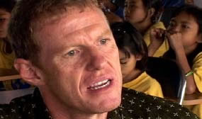
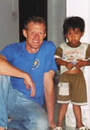

Scott
Neeson

E’ nato in Scozia,
a Edimburgo. A cinque anni emigrò con la
sua famiglia in Australia.
E’ vissuto ad Adelaide, nell’Australia
del sud, dove, entrato a far parte di una grande
impresa che gestiva i drive-in nelle zone rurali,
iniziò quella che sarebbe stata una lunga
carriera piena di successi nell’industria
cinematografica.
Nel 1983 si trasferì a Sidney per entrare
nella “Greater Union Organization”,
una catena di cinema. In breve tempo fu a capo
della programmazione.
Poi divenne Direttore Generale di una Joint-Venture
che si occupava della diffusione dei film della
20th Century Fox, della Columbia e Tristar, nonché
della Hoyt’s, una casa produttrice di film
australiani.
Nel 1993 arrivò a Los Angeles come responsabile
del marketing internazionale della 20th Century
Fox.
Nel 2000 divenne Presidente della “International
Theatrical”, responsabile della diffusione
di film come Titanic, Guerre stellari, Braveheart,
Independence Day, X Men e molti altri.
Nel 2003 lasciò la Fox per prendere in
mano le operazioni di marketing internazionale
della Sony Pictures.
Nelle cinque settimane trascorse fra i due lavori,
fece un viaggio in Asia con l’intenzione
di arrivare in India via Bangkok.
Nella sosta, che doveva durare due giorni, a Phnom-Penh
fece personale esperienza della tragica situazione
dei bambini della città.
La sosta si sarebbe prolungata per quattro settimane
e fu il primo passo verso la fondazione del Cambodian
Children’s Fund (CCF).
All’inizio i tentativi di aiutare i bambini
più poveri fallirono. I genitori, non avendo
speranza nel futuro, preferivano togliere i figli
dalle scuole e inviarli nelle strade a chiedere
la carità. Anche la distribuzione di vestiti,
scarpe e libri divenne inutile perché i
genitori rivendevano immediatamente tutto. La
lezione di questi fallimenti portò Neeson
ad istituire una struttura del CCF dedicata a
provvedere ai bisogni dei bambini più negletti.
Nel
settembre dello stesso anno Neeson parte per iniziare
il suo nuovo lavoro alla Sony Pictures, ma l’esperienza
in campo umanitario e la possibilità di
aiutare tanti esseri umani continuava ad ossessionarlo.
Nei dodici mesi che seguirono, mentre organizzava
le operazioni di marketing, si recava mensilmente
in Cambogia per sviluppare il lavoro del CCF.
Poi divenne evidente che unire una responsabilità
di alto livello nell’industria cinematografica
con l’impegno umanitario non era possibile.
Lasciare una brillante carriera ed i tanti vantaggi
che ne derivavano, fu una decisione del suo cuore.
Neeson cominciò ad organizzare il suo trasferimento
per un lungo periodo in Cambogia vendendo la sua
casa, l’automobile, la barca e quant’altro
possedeva.
Tutti i costi iniziali dell’operazione CCF
furono finanziati personalmente da Scott, che
ora è il Direttore Esecutivo dell’organizzazione
a tempo pieno.
Sostiene che il compito più difficile è
dover dire qualche volta di no ai più bisognosi,
a causa dei limiti dello spazio e delle risorse.
Il progetto a lungo termine di Neeson, quando
il problema economico sarà risolto nell’attuale
centro, prevede l’organizzazione di strutture-satelliti
del CCF nelle regioni più importanti della
Cambogia, paese che ha avuto una storia recente
veramente drammatica, con 2 milioni di morti durante
il regime di Pol-Pot.
La prostituzione è la minaccia più
grave per i bambini, che spesso vengono venduti
dalle famiglie stesse per poter sopravvivere.
Nel marzo 2006 è stata inaugurata da Imelde
e Stefano Cavalleri, la scuola da loro finanziata.
Due terzi dei bambini accolti nella scuola lavoravano
e vivevano nella tristemente nota discarica di
Stoeng Meanchey.
La grande generosità dei signori Cavalleri
ha potuto finanziare la costruzione della seconda,
struttura del ccf, e le spese per il mantenimento
per tutto il 2006. Tutto il resto è stato
interamente finanziato personalmente da Scott
Neeson (che non possiede più nulla ed ha
rinunciato al proprio stipendio) ed il mantenimento
avviene tramite quello che tutti i volontari riescono
a raccogliere nel mondo affinchè molti
bambini cambogiani possono tornare a sorridere
e sperare nel futuro.
|